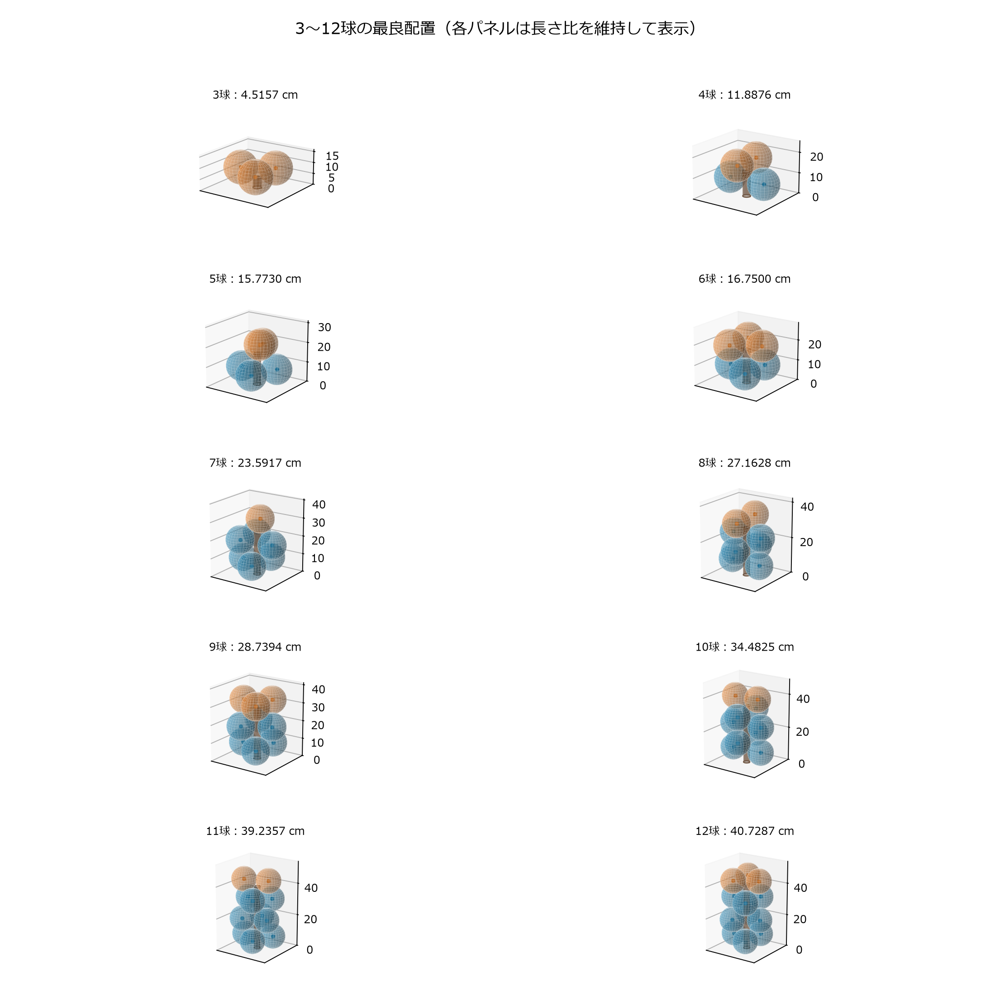

球と円柱の接触配置
3〜12個の同じ大きさの球が円柱に接触するときの、円柱高さの数値探索結果です。各配置を回転・拡大して確認し、選択した局所最適化の過程を再生できます。
条件とデータの読み方
円柱直径 3.71 cm、球直径 15.3 cm。円柱の底は床 z=0 に置き、球は床を貫通しません。全球が円柱の側面・上面・上端の縁のいずれかに接触し、球同士は重なりません。円柱高さは正の値として探索し、7 cm以上という下限は設けていません。
各球数につき独立3回、計6,000試行を実施しました。「成立」は共通の数値収束基準v1を満たすことを指し、大域的な最適性の証明を表しません。表示桁数は測定精度を表しません。
数値一覧 CSV · 数値一覧 JSON · 計算条件 JSON · ファイルハッシュ
数値一覧とインタラクティブ表示
3D表示でドラッグすると視点が回転し、ホイールで拡大できます。「試行」の選択と再生ボタンで記録した経路を再生します。再生は全6,000試行の履歴ではなく、代表として保存した局所探索です。3D表示にはWebGL対応ブラウザーと、Three.js配信元へのインターネット接続が必要です。
配置の一覧

青：側面、緑：上面、橙：上端の縁への接触。各パネル内の長さ比は維持していますが、パネル間の表示縮尺は同一ではありません。